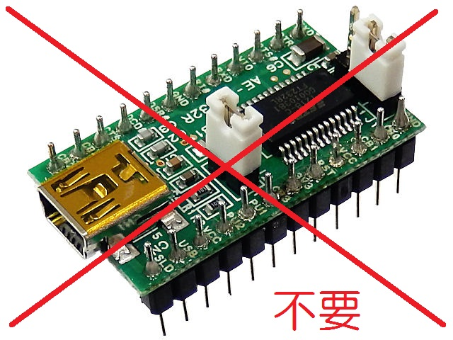
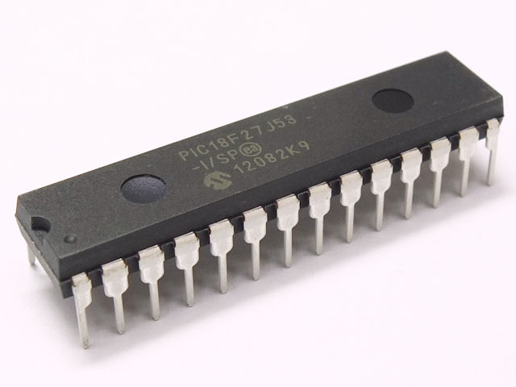
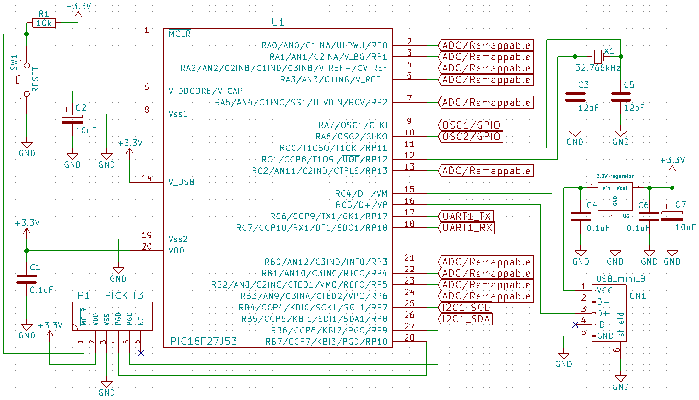
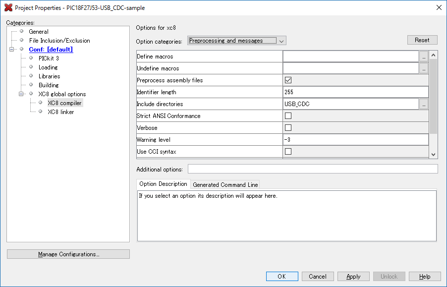
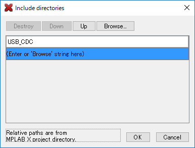

PICでUSB通信
概要
以前 PIC18F27J53のすすめ という記事を書きました。それの続きで、今回はUSBの使い方について書きたいと思います。
今回紹介する方法では、USBをUARTの代わりに使えるようにするものです。PICをPCにつなぐとCOMポートが現れます。
これならUSBシリアル変換モジュールを使う必要はなくります。

ハードウェアについて
PIC18F27J53を使用します。

15,16pinがそれぞれUSBのD-,D+なのでUSBコネクタに接続します。さらに14pinのV_USB端子には3.3VのVCCをつなぎます。
USBから電源をとるときは、3端子レギュレータを通して3.3Vにするのを忘れずに。
回路図

{kind=link}
ソフトウェアについて
PIC用USB-CDCライブラリ
Microchipの公式ライブラリ（MLA）を参考に僕がライブラリを作ったので、それを利用します。
USBのプログラムを自分で実装するのはかなり厳しいです。ライブラリを使いましょう。
必要なファイル一覧
USB関連のファイル
- My_USB_CDC.h
- My_USB_CDC.c
- usb_config.h
- usb_descriptors.c
- usb/usb.h
- usb/usb_ch9.h
- usb/usb_common.h
- usb/usb_device.c
- usb/usb_device.h
- usb/usb_device_cdc.c
- usb/usb_device_cdc.h
- usb/usb_device_local.h
- usb/usb_hal.h
- usb/usb_hal_pic18.h
送受信バッファ用ファイル
- My_ringbuf.h
- My_ringbuf.c
これらのファイルはここからダウンロードできます。
ユーザーが使う関数
このうちユーザーが使う関数が含まれるのは、
- My_USB_CDC.h
- My_ringbuf.h
の2つです。
My_USB_CDC.h
/*******************************************************************
* Microchip PIC, USB-CDC Library
* Author: @Ryokeri14
* Date: 2016.01.10
*******************************************************************/
#ifndef MY_USB_CDC_H
#define MY_USB_CDC_H
/** INCLUDES *******************************************************/
#include <stdbool.h>
#include <stddef.h>
#include <My_ringbuf.h>
#include "usb_config.h"
#include <usb/usb.h>
#include <usb/usb_device.h>
#include <usb/usb_device_cdc.h>
/** VALUES ********************************************************/
#define USB_RX_BUFFER_SIZE 250
#define USB_TX_BUFFER_SIZE 250
/** VARIABLES *****************************************************/
extern ringbuf_t usb_rx;
extern ringbuf_t usb_tx;
/** USER FUNCTIONS ************************************************/
void USB_CDC_init(void);
void USB_CDC_ISR(void);
void USB_CDC_task(void);
/** FUNCTIONS *****************************************************/
static void USB_CDC_buffer_init(void);
static void USB_CDC_send(uint16_t length);
static uint8_t USB_CDC_get(void);
static void APP_DeviceCDCBasicDemoInitialize();
bool USER_USB_CALLBACK_EVENT_HANDLER(USB_EVENT event, void *pdata, uint16_t size);
#endifMy_ringbuf.h
/*
* File: My_ringbuf.h
* Author: kerikun11
*
* Created on 2015/02/26, 19:21
*/
#ifndef MY_RINGBUF_H
#define MY_RINGBUF_H
#include <stdint.h>
//*************************** ringbuf ***************************//
// headは次に入れるバッファを指す。tailは次に出すバッファを指す。
typedef struct ringbuf {
uint8_t *buf;
uint16_t size;
uint16_t head;
uint16_t tail;
} ringbuf_t;
void ringbuf_init(ringbuf_t *rb, uint8_t *internal_buf, uint16_t bufsize);
uint16_t ringbuf_num(ringbuf_t *rb);
void ringbuf_put(ringbuf_t *rb, uint8_t data);
void ringbuf_put_num(ringbuf_t *rb, const uint16_t value, uint8_t digits);
void ringbuf_put_str(ringbuf_t *rb, const char *str);
uint8_t ringbuf_pop(ringbuf_t *rb);
void ringbuf_backspace(ringbuf_t *rb);
void ringbuf_delete(ringbuf_t *rb);
#endif /* MY_RINGBUF_H */ライブラリファイルの追加
Cファイルとヘッダーファイル
外部のライブラリを使用するとき、Cファイルとヘッダーファイルではプロジェクトへの読み込み方が異なります。
Cファイルは「Add Existing Item…」からプロジェクトにファイルを追加します。
一方、ヘッダーファイルは、プロジェクトのプロパティの「Include directory」にヘッダーファイルのあるディレクトリを指定するだけで、プロジェクトに直接ファイルを追加する必要はありません。
ファイル追加の仕方
- ダウンロードして解凍したUSB-CDCディレクトリをMPLABのプロジェクトのフォルダ内にコピーします。
- MPLABXプロジェクトの「Source Files」ディレクトリを右クリックして「Add Existing Item…」からCファイルを追加します。
- プロジェクトを右クリック→Properties→XC8 Compiler→Include directoriesにUSB_CDCディレクトリを追加します。
- mainファイルを作成して以下のソースを書けばOKです。
 
USB通信の仕方
USB機能の有効化
- main関数で、
USB_CDC_ini();を呼び出します。 - mainループで、
USB_CDC_task();を呼び出します。 - 割り込み関数内で、
USB_CDC_ISR();を呼び出します。
データの送信
送りたいデータをusb_txというリングバッファにプットすると自動で送信されます。
ringbuf_put(&usb_tx, data);
または
ringbuf_put_str(&usb_tx, "Hello World!\n");
データの受信
受信データはusb_rxというリングバッファに入っているのでポップします。
受信データの個数はringbuf_num(&usb_rx)関数で確認できます。
if(ringbuf_num(&usb_rx)){
recieved_data = ringbuf_pop(&usb_rx);
}
注意
関数の二重呼び出しの禁止
PICでは同じ関数の二重呼び出しができません（正常に動作しません）。今回のプログラムでは、メインループと割り込み関数の双方でリングバッファの関数を使用しているので、二重呼び出しに該当します。
→追記：PICが二重呼び出しを禁止しているというより、リングバッファ関数がリエントラントではないことが問題なようです。
対策
メインループでリングバッファ関数を使用する前に割り込み禁止をします。
リングバッファ関数を使用し終わったら割り込みを許可します。
めんどくさい
リングバッファ関数を使うごとに割り込み禁止、許可を繰り返すのはとても面倒ですし、忘れてしまったらバグにつながり、危険です。
それなので、メインループの中で処理をまとめて割り込み禁止にするとよいと思います。
ただし、割り込み禁止時間が長くなると別の問題が発生しますので、割り込み禁止時間はできるだけ短くなるように心がけましょう。
例えば、delay関数などは割り込み禁止中に行ってはいけません。
例：
void main(void) {
/* 各種設定 */
// メインループ
while (1) {
INTCONbits.GIE = 0; // 関数の二重呼び出しを防ぐために割り込み禁止
/* 何らかの処理1 */
INTCONbits.GIE = 1; // 割り込み禁止の解除
// ここで割り込みが起きる
INTCONbits.GIE = 0; // 関数の二重呼び出しを防ぐために割り込み禁止
/* 何らかの処理2 */
INTCONbits.GIE = 1; // 割り込み禁止の解除
// ここで割り込みが起きる
__delay_ms(100); // delayなどは割り込み許可エリアに書く
}
}プログラムの例
以上の設定がすでにされているMPLAB Xのプロジェクトファイルはここからダウンロードできます。
コンパイルすると大量の警告が出ますが、これはライブラリ中の未使用関数の警告です。無視して大丈夫です。
main.c
/*
* PIC18F27J53用USB-CDCサンプルプログラム
* Date: 2016.01.08
* Author: @Ryokeri
*/
// CONFIG1L
#pragma config WDTEN = OFF, PLLDIV = 2, CFGPLLEN = ON, STVREN = OFF, XINST = OFF
// CONFIG1H
#pragma config CPUDIV = OSC1, CP0 = OFF
// CONFIG2L
#pragma config OSC = INTOSCPLL, SOSCSEL = LOW, CLKOEC = OFF, FCMEN = OFF, IESO = OFF
// CONFIG2H
#pragma config WDTPS = 1024
// CONFIG3L
#pragma config DSWDTOSC = T1OSCREF, RTCOSC = T1OSCREF, DSBOREN = OFF, DSWDTEN = OFF, DSWDTPS = G2
// CONFIG3H
#pragma config IOL1WAY = OFF, ADCSEL = BIT12, MSSP7B_EN = MSK7
// CONFIG4L
#pragma config WPFP = PAGE_127, WPCFG = OFF
// CONFIG4H
#pragma config WPDIS = OFF, WPEND = PAGE_WPFP, LS48MHZ = SYS48X8
#include <xc.h>
#include <My_USB_CDC.h>
void interrupt ISR(void) {
USB_CDC_ISR();
}
void main(void) {
OSCCONbits.IRCF = 7;
OSCTUNEbits.PLLEN = 1;
OSCCONbits.SCS = 0;
TRISA = 0b00010000; // RA7, RA6, RA5, Vcap, RA3, RA2, RA1, RA0
TRISB = 0b00111111; // RB7, RB6, SDA, SCL, RB3, RB2, RB1, RB0
TRISC = 0b10111010; // RXD, TXD, D+, D-, Vusb,RC2, T1OSI,T1OSO
ANCON0 = 0b11111111; // x,x,x,AN4(RA5),AN3(RA3),AN2(RA2),AN1(RA1),AN0(RA0)
ANCON1 = 0b00011111; // VBG,x,x,AN12(RB0),AN11(RC2),AN10(RB1),AN9(RB3),AN8(RB2)
INTCON2bits.RBPU = 0; // PORTB Pull-up Pnable
USB_CDC_init();
while (1) {
INTCONbits.GIE = 0; // 関数の二重呼び出しを防ぐために割り込み禁止
// 受信したデータをそのまま送信する。
if (ringbuf_num(&usb_rx)) {
uint8_t data = ringbuf_pop(&usb_rx);
ringbuf_put(&usb_tx, data);
}
USB_CDC_task();
INTCONbits.GIE = 1; // 割り込み禁止の解除
}
}まとめ
USBでシリアル通信ができると、とても便利です。ぜひ使ってみてください！